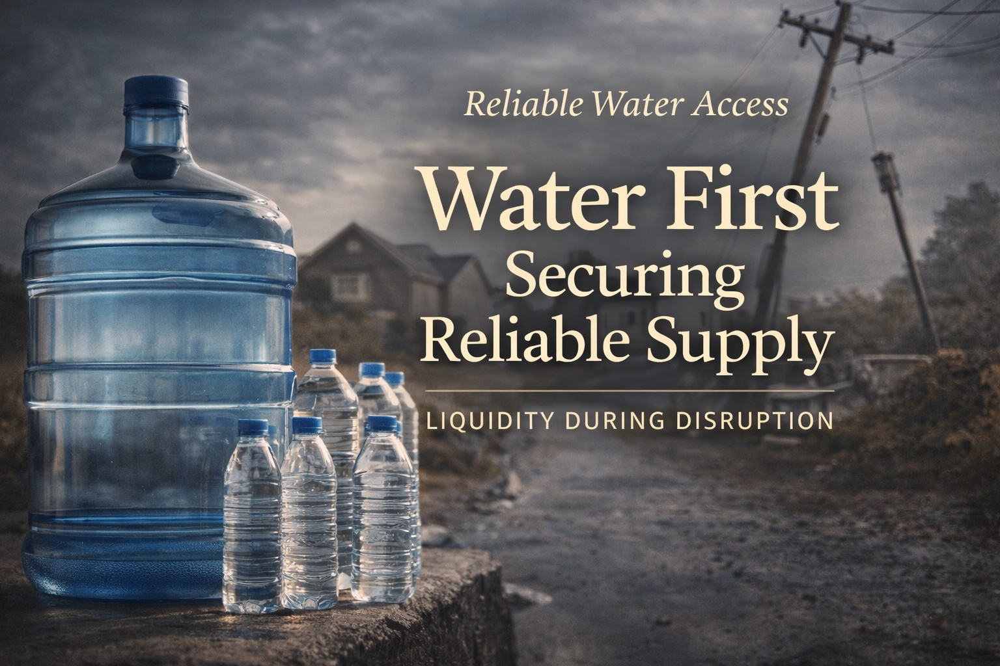

Reliable Water Access: Securing Reliable Supply
Last updated: February 2026

- Water security starts with reliability. A small, realistic buffer beats a perfect plan you never implement.
- Redundancy is calm. Two simple sources are better than one complex system.
- Separate storage from treatment. Store first, then treat as needed with a simple method you trust.
- Clarity compounds. So does confusion. Keep your system simple enough to maintain.
Purpose: Help you build a steady, low-stress water buffer that preserves agency during common disruptions (boil notices, storms, outages, supply issues). This is not about extremes. It’s about continuity.
Water is not a “nice to have”
Food is resilient because it can be stored and substituted. Water is less forgiving. When reliable water access changes, the timeline compresses quickly — especially for drinking, basic hygiene, and sanitation.
The goal of water security is not perfection. It is reliability: having enough clean water, for long enough, to stay calm and make good decisions.
Start with a realistic buffer
The most common failure mode is aiming too big and doing nothing. A calm rule: build the smallest system you will actually maintain, then expand gradually.
A buffer can be modest and still meaningful. The difference between “no water” and “some water” is dramatic. A buffer buys time, reduces panic, and improves choices.
A simple mental model
- Baseline: normal daily use.
- Buffer: a small stored reserve that covers short disruptions.
- Backups: at least one additional way to access or produce safe water.
Separate water storage from water treatment
Many people mix these topics and end up overcomplicating both. A calm approach:
- Storage is about having water available.
- Treatment is about making water safe when you need it.
You can store water in stable containers and keep treatment methods simple. You do not need a single perfect system. You need a system you can operate calmly under stress.
Build redundancy without complexity
Resilient systems don’t rely on one fragile point. In water security, redundancy can be simple:
- Primary: your normal supply (tap, well, delivery).
- Stored reserve: the buffer you control.
- Secondary option: a backup source or method (e.g., alternate supply + basic treatment).
Redundancy reduces urgency. Urgency creates mistakes. This is the same principle you used in finance: avoid forced decisions by preserving options.
Choose containers and locations you can live with
Water storage fails when it becomes inconvenient, heavy, or hard to access. Your setup should fit your space and your routines.
A practical guideline: store water where it is cool, clean, and accessible — and where you will not resent it.
If your system creates friction, you won’t maintain it. Simple beats sophisticated.
Rotation and maintenance: small is sustainable
A calm water plan is one you can maintain with low effort. If your system requires constant attention, it will fail during the very time you need it.
Aim for a minimal maintenance loop: periodic checks, occasional rotation, and clear labeling. Build habits that keep the system alive without becoming a hobby.
Using water wisely during a disruption
When supply becomes uncertain, the first win is not heroics. It is prioritization.
- Drinking comes first.
- Basic hygiene and sanitation come next.
- Convenience uses (long showers, laundry, unnecessary cleaning) can pause temporarily.
Good prioritization extends your buffer and keeps you calm. Calm preserves judgment.
Next steps
This is the first article in the Reliable Water Access series.
- Securing Reliable Supply
- Treating Water Safely and Simply
- Using Water Wisely Under Constraint
This article is for general education and practical planning. It is not medical or safety certification guidance. Follow local advisories for boil notices and contamination events.